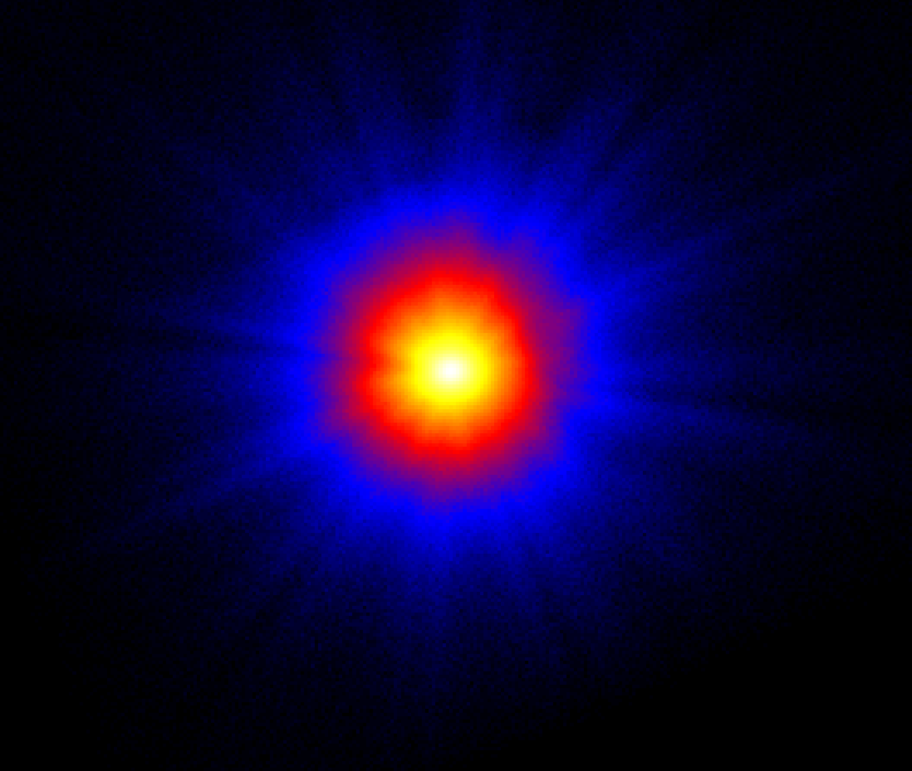
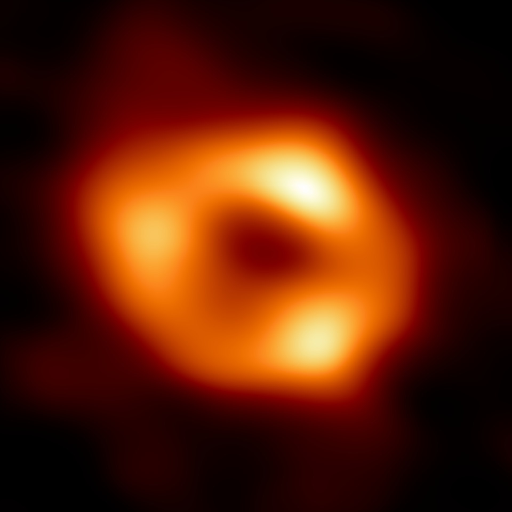

Observing Black Holes
Common stellar-mass black holes and larger themselves do not emit meaningful amounts of radiation. Therefore, in order to find them, we must look at how they affect their surroundings. Lone black holes are therefore hard to find. Instead, we look for black holes in binary systems, and in dense regions of stars and gaseuous matter, where the extreme conditions caused by the black hole's intense gravity allow for obvious effects, usually in the form of an accretion disk, or in extreme orbital mechanics -- usually both.
An accretion disk is a thin disk of material in a low (and often terminal) orbit of a compact object, like a white dwarf, neutron star, or black hole. Depending on the type of system, the source of this material can vary. For black-hole binary systems, the source of this material is usually a large companion star. The compact object, in a realtively low orbit around the companion, strips material from the companion's surface. That material then spirals into the object, experiencing massive friction as it gets closer and orbits faster. This intense friction is enough that the accreting material can be heated to temperatures of more than a million Kelvin, and therefore the material glows strongly across the whole electromagnetic spectrum, usually peaking in X-rays.
From Earth, we can then detect this accretion disk as a bright object glowing across the whole electromagnetic spectrum. We can also see other properties in the spectrum -- specifically, doppler shifting and beaming, as the material sprials so quickly that it causes easily-measurable redshift and blueshift on the blackbody radiation from the disk, often so much that we see single emission lines broadening into double-peaks, a sign of just how fast the material is moving.
Another way we can detect black holes is from the indirect effects of their intense gravity. By watching systems like the centers of massive globular clusters (e.g. Omega Centauri),

Cygnus X-1
The first observations of an object thought to be a black hole was of one of the brightest X-ray sources in the sky, Cygnus X-1, often written Cyg X-1. A high-mass X-ray binary (HMXB), Cyg X-1 is extremely X-ray bright. Found during sounding rocket X-ray scans from White Sands Missile range in 1964, it was one of the primary sources studied by Uhuru, the first X-ray space telescope launched in 1970. With how bright it was, even such early instruments could detect variability on the timescale of fractions of a second. This variability massively limited the potential size of such an object, even as the angular resolution was not (and still is not) enough to potentially resolve the size of the object. Based on the actual period of the fluctuations, it was possible to narrow down the size of the object to no more than the radius of Jupiter.
From there, in 1971 observations finally were able to pinpoint the location of the source enough to identify it in other wavelengths. At the same location in the sky as the X-ray source is an O-class supergiant, HDE 226868 -- a bright star, but far enough away to be apparant magnatude +9 -- but that cannot be an X-ray source, as though bright stars do produce quite a bit of energy in the higher-energy wavebands, X-rays are so energetic that even such a star cannot be the cause. This suggests a compact companion, and in 1973, the Doppler shift from the blue supergiant around the compact object predicted a mass in excess of the Tolman-Oppenheimer-Volkoff limit, which gives strong evidence that the object is a black hole.
Today, estimates put the mass of the compact object at about 21 solar masses, putting it squarely as a stellar-mass black hole and ruling out other types of compact objects, like neutron stars.

Sagittarius A*
In 1974, a bright radio source was detected embedded within the diffuse Sagittarius A region, known to be in the direction of the center of the galaxy, and in 1982 this source was given the Sagittarius A* name, as it was the brightest single radio source within the diffuse emission, and was probably due to a single, compact, non-thermal object. By 1994, infared and short-wavelength radio had already shown that the object was compact and weighed about 3 million times the mass of the Sun.
Soon, other explanations were ruled out, and by 2003, orbital analysis of stars in the region of Sgr A* showed that th whole mass was within a very small region, about 6 light-hours. Further results showed hot-spots, consistent with the accretion of hot material, falling into the event horizon, but the 'smoking gun' came with the Event Horizon Telescope's famous 2022 image of the region immediately around Sgr A*.
Using radio inferometry, and with a network of telescopes all across the planet, the Event Horizon Telescope collaboration was able to produce a radio image of the supermassive black hole, down to a scale of about 0.4AU, showing a bright region of accretion around a dark area, the black hole's shadow. With no other kind of dark, compact object able to reach the kind of density required, this (and the previous observation of M87*, the supermassive black hole at the center of Messier 87) has been taken as the first direct observational evidence of a black hole, providing iron-clad evidence that this once-thought-to-be-erroneous result of General Relativity is in fact a true physical reality.